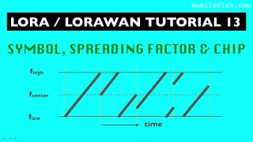

Скачай
оффлайн-версию
, работает без интернета:
полная
(41,5 Гб) или
легкая
(25,8 Гб)
Главная страница
АНТЕННЫ
Лекция по LoRa.
Лекция по LoRa.
Лекция по LoRa.
Таблица потери мощности от значения КСВ.
Список сформирован из темы
Антенны радиосвязь
Источник темы
ПЛАТФОРМА_FPV
Лекция по LoRa.
Из темы
Антенны радиосвязь
Из источника
ПЛАТФОРМА_FPV
LoRaLoRaWAN_tutorial_13_Symbol,_Spreading_Factor_and_Chip_rus.mp4

LoRaLoRaWAN_tutorial_13_Symbol,_Spreading_Factor_and_Chip_rus.mp4
Лекция по LoRa. Ключевые основные параметры модуляции.
ПЛАТФОРМА_FPV
#РАДИОСВЯЗЬ
#обучающее_видео_LORA
Веб-страница создана автоматически на основе
поста
пользователя
ПЛАТФОРМА_FPV